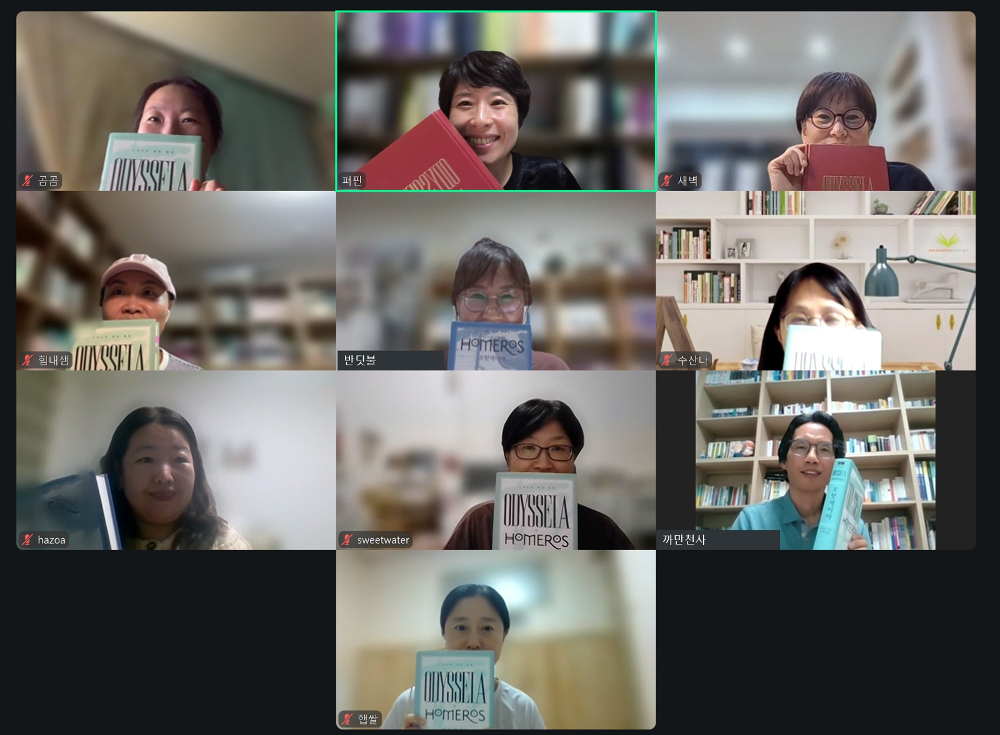

한 인간으로
돌아오는 길
귀향. 죽지도 늙지도 않는 섬을 떠나 아내와 아들이 있는 곳으로 돌아가려는 마음. 『오뒷세이아』 제5·6권을 함께 편 일요일 밤
바닷가에서 우는 사람
네 권이 지나는 동안 오뒷세우스는 사람들의 이야기 속에 있었다. 아들은 아버지의 소식을 찾아다녔고 사람들은 그가 살아 있는지조차 알지 못했다. 5권에서 처음 모습을 드러내는 오뒷세우스는 바닷가에서 울고 있다. 칼립소의 섬이다. 여신은 죽지도 늙지도 않게 해주겠다고 한다. 그곳에 일곱 해를 머문 남자는 여전히 집으로 돌아가고 싶어 한다. 불편 없이 지낼 수 있고 영원히 살 수도 있는 곳에서 눈물이 마르지 않는다.
오뒷세우스를 자신의 섬에 머물게 한 여신. 이름은 ‘숨기다’라는 뜻과 이어진다. 그날은 옛 명성과 영광을 간직한 채 인간 세상에서 잊힌 오뒷세우스의 모습과 함께 읽었다.
『일리아스』에서는 명예를 위해 목숨을 걸고 싸웠다. 『오뒷세이아』의 남자는 살아서 돌아가기를 바란다. 불멸을 권하는 여신 앞에서 한 여자의 남편으로, 아들의 아버지로 돌아가겠다고 한다. 그렇게 떠나면 금의환향할 듯하지만 낯선 땅에 닿은 몸에는 아무것도 남지 않는다. 6권의 오뒷세우스는 알몸이다. 전쟁의 명성에서 출발한 이야기가 집으로 돌아가려는 한 인간의 몸에 닿는다. 오뒷세우스가 등장하면 오랜 세월 겪은 일을 차례대로 듣게 될 것 같았다. 그런데 이야기는 칼립소의 섬에서 떠나는 그를 보여준다. 오랜 모험의 사정을 다 듣기도 전에 귀향이 시작된다. 기다리게 하면서도 다음 일을 궁금하게 하는 호메로스의 서술을 이야기했다. 집을 찾아 나선 아들과 돌아가려는 아버지를 지나 책은 그 한 사람을 가까이 보여준다.
영생할 수 있는 곳에서, 오뒷세우스는 왜 눈물을 흘렸을까?
영화를 보고 책을 다시 읽은 소감부터 오갔다. 바다와 폭풍은 상상보다 생생했고 어떤 장면은 책을 읽으며 떠올린 모습과 달랐다. 책에는 바다에서 고생하는 과정이 더 자세히 적혀 있다는 말도 있었다. 칼립소의 섬을 영화에서 보았을 때와 책의 화려한 묘사로 읽었을 때의 차이도 남았다. 한 번 보았던 장면을 떠올리며 읽으니 글자와 함께 모습이 그려졌다. 같은 범위를 몇 번 읽으며 눈에 들어온 것은 오뒷세우스가 생각을 멈추지 않는 모습이었다. 누군가의 제안을 곧바로 믿지 않고 살 길을 다시 찾는다. 한 고비를 넘으면 또 다음 고비를 생각한다.
칼립소가 보내준다고 했을 때도 ‘이거 믿을 수 없어’ 하면서 검증하고 또 검증하잖아요. 어떻게든 살고자 계속 생각하고 있는 게 기특했어요.
— 디퍼님 · 5권 나눔
- 이번에 읽으면서 새롭게 다가오거나 좋았던 부분은 무엇이었나요?전체 토론에 앞서 읽은 대목을 짧게 소개하고 돌아왔다.
떠나기로 한 사람
칼립소는 오뒷세우스를 돌봐주었고 함께 살기를 원했다. 그런데 책에는 더는 요정이 마음에 들지 않았다는 대목이 나온다. 처음에는 좋았을 수 있다. 동료를 잃고 고생한 끝에 머물 곳을 얻었으니 쉬고 싶었을 수도 있다. 그렇지만 한쪽이 원한다고 해서 두 사람이 같은 삶을 원하는 것은 아니다. 여신이 원하는 동안 남자는 원하지 않는 채 곁에 머문다. 자기 뜻으로 떠날 수 없는 생활에 관한 이야기가 이어졌다.
여자에게 끌려서 만약 여기서 산다면, 자기의 주체성이 아닌 타인의 피동적 존재로서 살아가게 되는 거잖아요. 그런 게 싫었던 게 아닐까요.
— 디퍼님 · 5권 나눔
가족이 그리워서라는 생각 곁에 정지된 삶을 견디기 어려웠을 거라는 생각도 놓였다. 고생하면서도 산을 오르고 달리는 사람을 떠올렸다. 오뒷세우스도 난관을 겪고 이겨내며 살아온 사람이다. 편안한 날이 계속되는 것만으로는 그가 원하던 삶이 되지 않았을 수 있다. 같은 생활이 끝없이 반복된다면 차라리 어려운 일을 겪고 그것을 넘어서며 의미를 찾고 싶을 것 같다는 생각이었다. 원하지 않는 채로 잠들고, 다시 같은 날을 맞는 모습을 책에서 짚었다. 더 훌륭하거나 더 아름다운 상대를 고르는 문제보다 자기로 있을 수 있는 사람 곁으로 가고 싶은 마음을 보았다는 말도 나왔다. 객관적으로 좋아 보이는 생활과 자신이 선택한 생활 사이에는 거리가 있었다.
목숨의 위험을 무릅쓸 만큼, 고향으로 돌아간다는 것은 어떤 의미일까?
귀향의 목적지는 막연하지 않다. 아내와 아들이 있는 곳이다. 자유롭게 떠나고 싶은 마음만으로 다 설명되지 않는다는 물음이 남았다. 그곳에서 기다리는 가족을 향한 책임감도 더해졌다. 전쟁을 떠날 때 명예를 바랐다면, 이번에는 무엇을 바라며 고향으로 향하는지도 물었다. 돌아가고 싶다는 소망은 분명한데 그 귀향이 자신에게 어떤 뜻인지 더 생각해보고 싶었다는 말이었다. 한편 뗏목을 손수 만들고 신의 말에도 의문을 품는 모습에서 인간이 스스로 서는 순간을 읽었다. 도와주겠다는 말에도 왜 자신을 도와주는지 되묻는다. 자신이 선택한 일은 힘들어도 해보고 싶어진다. 그날 책을 읽고 모인 일까지 이 선택과 나란히 놓였다.
인간이 자립할 수 있는 시점이 시작된 것 같아서, 이때부터 우리가 자유라는 생각, 개념을 가지게 된 것 아닌가. 스스로 할 수 있는 힘.
— 디퍼님 · 5권 나눔
뗏목과 머릿수건
오뒷세우스는 나흘 동안 뗏목을 짓는다. 떠날 때 가졌던 그 뗏목마저 바다에서 부서진다. 포세이돈이 일으킨 폭풍 속에서 여신이 건넨 머릿수건을 가슴에 두른다. 목숨을 붙들어준 수건은 뭍에 닿은 뒤 강물에 돌려보낸다. 손수 만든 것을 잃고 도움받은 것까지 내려놓은 몸이 해변에 남는다. 처음부터 좋은 배를 주어 돌려보내지 않은 까닭을 묻는 목소리가 여러 번 이어졌다.
귀향시키려 했다면, 왜 좋은 배 대신 뗏목을 타게 했을까?
오뒷세우스가 직접 만들어 타고 떠나는 탈것. 그날은 손수 만든 뗏목과 몸에 두른 머릿수건을 문명의 상징으로 읽었다. 자연 속에서 살아남기 위해 만든 것들이지만 폭풍을 마음대로 멈출 수는 없다.
돛과 노를 갖춘 배를 떠올린 뒤 뗏목을 다시 보았다. 전쟁에서는 지략으로 길을 만들고 승리를 얻었다. 바다에서는 자기 계획대로 나아가지 못한다. 영화 속에서 파도에 맞서려던 몸을 떠올리며 내맡김을 이야기했다. 한때 당당하게 이끌던 사람이 홀로 뗏목에 의지하는 장면이 오래 남았다는 말도 있었다. 내려놓으라는 말을 삶에서 여러 번 들은 경험은 알몸으로 다시 시작하는 모습과 이어졌다. 다른 사람을 자기 뜻대로 움직이려 하기보다 자신이 할 수 있는 일에 집중하고 싶다는 생각이었다.
정말 모든 걸 내려놓고 이렇게 내맡김을 보여주는 것은 아닐까, 그런 생각도 들었던 것 같아요.
— 디퍼님 · 5권 나눔
내가 잘하고 있다고 느낄 때는 어디까지 내 힘인지 생각하기 어렵다. 스스로 옳다고 판단한 선택이 다른 사람에게는 고통이 될 수도 있다. 오뒷세우스가 모든 것을 잃고 낮아진 모습으로 돌아가는 장면 앞에서 자신의 판단을 돌아보는 말이 나왔다. 예전의 지략과 자신감으로는 뜻대로 되지 않는 바다에서 도움을 받는다. 계획한 대로 살아왔다고 생각했지만 돌아보면 그렇지 않은 순간이 있었다는 소감도 이어졌다. 좋은 생각이나 대답이 떠오를 때 그것이 온전히 자기 힘이었는지 묻게 된다는 말이었다. 한편 뗏목을 버리는 순간까지도 그는 생각한다. 여신이 떠나라고 한다고 곧바로 뛰어들지 않는다. 아직 뭍은 멀다. 뗏목이 버텨주는 동안에는 머물고, 파도가 산산이 부수면 그때 헤엄치겠다고 정한다.
삶에 통제할 수 없는 영역이 분명히 있는데, 내가 가장 잘나갈 때는 오히려 내가 다 통제할 수 있다고 착각할 수도 있겠구나. 오뒷세우스가 그랬던 것처럼요.
— 디퍼님 · 5권 나눔
뭍에서 다시 깨어나다
추수할 수 없는 바다『오뒷세이아』의 반복 형용어구 · 제5·6권 TRIVIUM
그 바다를 지나 도착한 뭍에서 오뒷세우스는 올리브나무 두 그루 아래로 들어간다. 낙엽을 두껍게 덮고 잠든 몸에 아테나가 잠을 부어준다. 칼립소의 동굴을 자궁처럼 읽었던 이야기가 여기서 이어졌다. 가장 편안하게 머물 수 있더라도 다시 태어나기 위해서는 나와야 한다는 생각이었다. 바다를 건너 알몸으로 잠들고 깨어나는 과정이 한 번 더 태어나는 모습과 겹쳤다. 6권에서는 나우시카아가 빨래하러 오고 그 곁에서 오뒷세우스가 깨어난다.
죽음의 영역으로 읽은 바다를 지나 낙엽 속에서 잠들었다가 깨어나는 과정. 동굴과 덤불을 자궁에 견준 그날의 해석이다. 뗏목과 옷을 잃고 알몸으로 뭍에 닿은 장면을 함께 보았다.
나무토막을 붙잡고 파도를 건너는 모습에서는 내맡김과 함께 참을성이 보였다. 참고 견딘다는 말이 책에 거듭 나온다. 운명에 몸을 맡기면서도 손을 놓지 않는다. 끈질기게 버티는 순간에 신이 도움을 주고 분별력을 준다고 읽었다. 모든 것을 스스로 하려는 마음과 아무것도 하지 않는 상태 사이에서, 지금 자신이 할 일을 찾는 이야기가 오갔다.
여기서도 계속 참고 견딘다는 표현이 나오더라고요. 그걸 꽉 쥐고 절대 안 놓치려고. 그런 순간 아테나가 분별력을 주고, 끈질기게 운명에 맞서는 모습을 볼 때 신이 오히려 도움을 준다고 느꼈거든요.
— 디퍼님 · 5권 나눔
죽을 고생 끝에 얻는 분별력은, 그만큼 값진 것일까?
결국 혼자 살아갈 수 없는 인간의 삶을 어떻게 하면 같이 살아갈 수 있을까 바라보게 되는 게 분별력을 받는 순간. 칼립소의 공간에서 굳이 나와야만 얻을 수 있는 선물이 아니었을까 하는 생각이 들어서, 분별력이라는 단어가 눈에 많이 가더라고요.
— 디퍼님 · 5–6권 나눔
목욕하고 나온 오뒷세우스에게 아테나가 아름다움을 더한다. 그 우아함을 갖고 싶다는 말 곁에 벌거벗은 아이의 순수함을 떠올린 말이 있었다. 고생한 끝에 단단해진 내면이 밖으로 드러난 모습으로 읽기도 했다. 그렇다면 그가 얻은 것은 온전히 자신의 노력에서 온 것일까. 나우시카아가 그를 만나기 전부터 신들은 움직이고 있었다. 한 인간이 견뎌낸 시간과 신들이 건넨 도움을 함께 놓고 생각했다. 어려운 일을 겪고 나서 모든 것을 다 할 수 있다고 생각하지 않게 되었다는 경험도 나왔다. 여전히 힘든 일은 덜 겪고 싶지만 그런 경험이 없었다면 지금의 자신도 없었을 것 같다는 말이었다. 겪은 일은 서로 달랐고, 책 속의 분별력이라는 낱말 앞에서 자기 삶을 다시 보았다.
매 순간의 선택
불편을 덜어주는 기술이 늘어나면 칼립소의 섬은 다른 모습으로 가까워질 수 있다. 원하던 편안함이 모두 주어져도 오뒷세우스는 울면서 떠나려 했다. 그 모습을 AI 시대의 삶에 비추어 물었다. 고통 없이 살 수 있다면 자유로운가. 인간적인 것을 생각하며 무엇을 준비해야 할까. 앞으로 기술이 어떻게 펼쳐질지 알 수 없어서, 뗏목을 타고 AI 앞에 있는 듯하다는 말이 나왔다.
모든 불편을 없애고 행복한 선택지를 사회가 다 제공한다면, 인간은 자유로울까?
AI나 신이나 이런 운명이 길을 제시할 수는 있겠지만, 결국 오뒷세우스처럼 실제로 걷는 것은 내 의지, 인간의 몫이다. 그렇게 연결해서 생각을 해봤습니다.
— 디퍼님 · 5–6권 나눔
혼자 읽었을 때와 함께 이야기한 뒤에 보이는 장면이 달랐다. 글로 읽은 바다에 영화의 파도가 겹쳤고 다시 책을 펴고 싶은 마음이 생겼다. 서로의 말을 듣고 생각이 확장되었다는 소감도 있었다. 책에서 읽은 내맡김을 아무것도 하지 않고 편히 있는 상태로 생각했던 때를 돌아보았다. 지금은 누구보다 치열하게 자기 삶의 주인으로 서 있어야 가능한 일처럼 느껴진다는 말이었다.
영화를 다시 한 번 봐야겠다는 생각이 불현듯 듭니다. (…) 여러분들 얘기 들으니까 영화를 다시 한 번 더 봐야 되겠다.
— 디퍼님 · 5–6권 나눔
아무것도 선택할 수 없이 편안한 삶을 살지 않겠구나. 그래서 우리가 책을 읽고 고민도 하고 스스로 고난을 자처하면서 끝까지 살아남을 거라는 희망을 봤습니다.
— 디퍼님 · 5–6권 나눔
오뒷세우스에게는 도움을 주는 이들이 있다. 신은 꿈에 나타나기도 하고 사람을 먼저 보내기도 한다. 그 도움을 받으면서도 인간은 그때 자신이 무엇을 할지 정한다. 수건을 받고 뗏목에 머물다가 헤엄치는 순간까지 선택이 이어진다. 여신의 말조차 음모일까 두려워한 오뒷세우스는 자신의 눈으로 거리를 가늠한다. 아직은 그 말을 따르지 않겠다고 말하고 지금 견딜 방법을 찾는다. 일상에서도 지금 무엇을 해야 하는지 계속 묻게 된다는 말이 나왔다. 먼저 정해진 운명이 있다고 믿더라도 오늘의 선택을 대신해주지는 않는다.
끝없이 질문하고 신과 조율하기도 하고 신을 의심하기도 하고 두려워하기도 하지만, 다시 한 번 ‘나는 이렇게 할 거야’라고 하는 게 분별력이 아닐까.
— 디퍼님 · 5권 나눔
멈춰야 될 때 나가면 안 되고, 나가야 될 때 멈추면 안 되는 거잖아요. 결국 내가 주인으로서 주체적인 마음이 없으면 운명이 있든 없든 관계가 없다는 생각이 드네요.
— 디퍼님 · 5–6권 나눔
